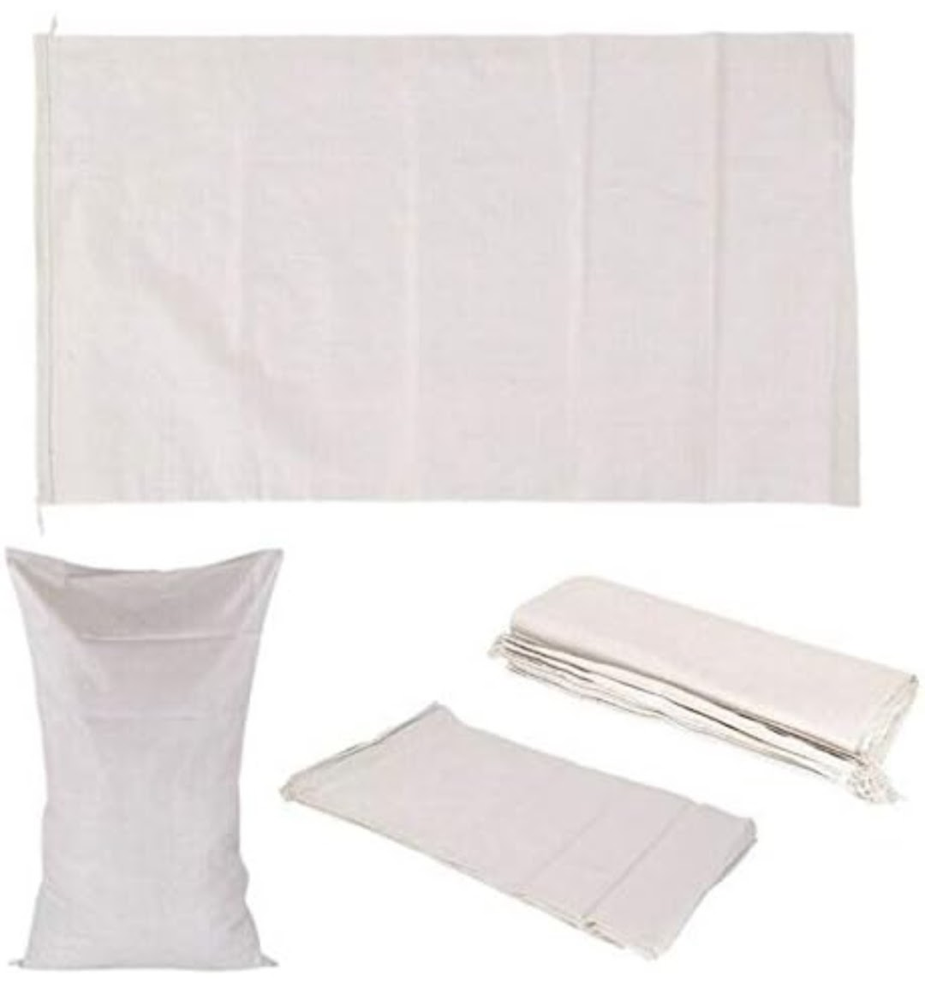
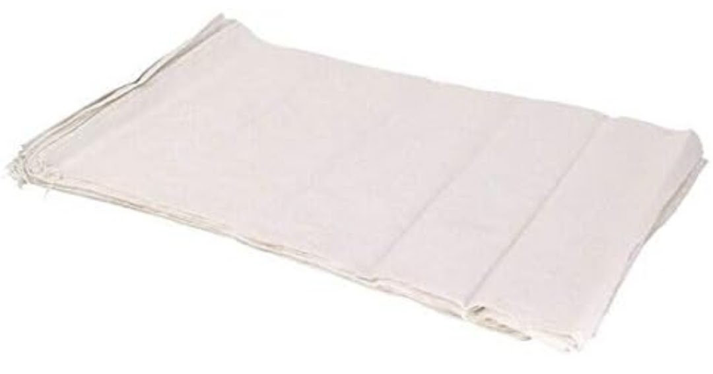
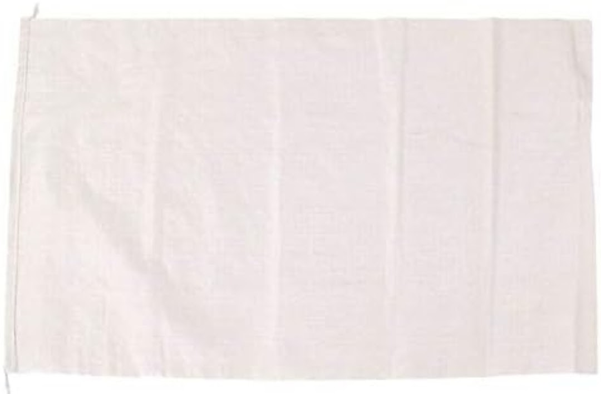
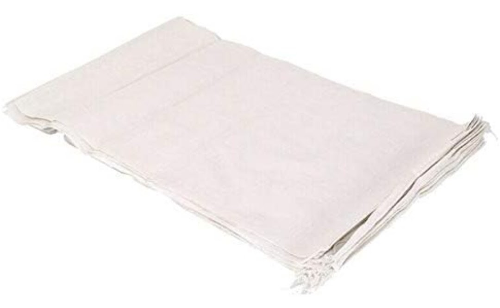
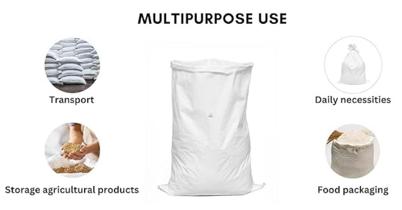
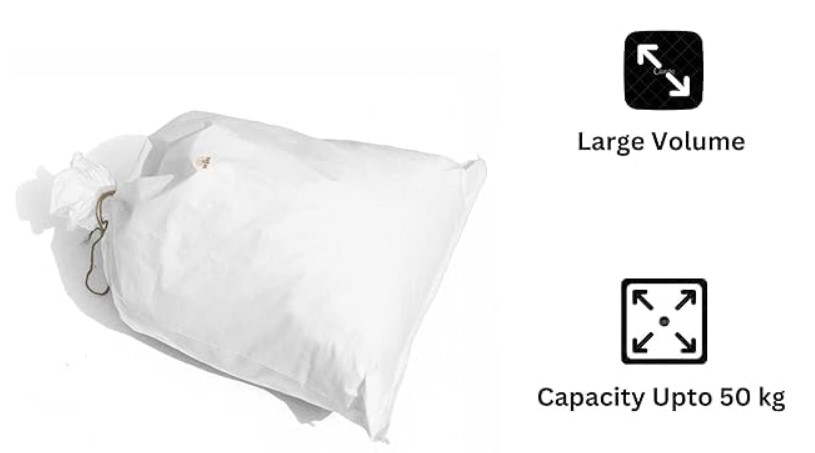

Product Overview
Woven Sacks are manufactured from woven polypropylene fabric
and are widely used for packaging, storage, and transport of
bulk materials across agricultural and industrial sectors.
These sacks offer excellent load-bearing strength, durability,
and resistance to tearing, making them suitable for both
short-term and long-distance handling.
Key Features
- High tensile strength and durability
- Lightweight and easy to handle
- Resistant to tearing and abrasion
- Moisture resistant for safe storage
- Cost-effective bulk packaging solution
Specifications
- Material: Woven Polypropylene (PP)
- Capacity: Multiple weight options available
- Construction: Laminated / Unlaminated
- Colour: White (custom colours available)
- Usage: Bulk packaging and storage
Applications & Use Cases
- Agricultural produce and grains
- Fertilizers and seeds
- Cement, sand, and construction materials
- Chemicals and industrial raw materials
- Warehouse and transport packaging
Best Suited For
- Farmers and agricultural suppliers
- Fertilizer and seed manufacturers
- Cement and construction material suppliers
- Industrial packaging and logistics operators
Selection Note
For Indian storage and transport conditions, woven sack
selection should be based on load weight, stacking height,
and moisture exposure. Laminated sacks are recommended where
moisture protection is required, while unlaminated sacks
are suitable for dry goods and short-term storage.
Commonly Used Along With
- PP Sutli or Stitching Thread
- Stretch Film and Pallet Covers
- Pallets and Warehouse Handling Equipment
Product FAQs
-
What are woven sacks commonly used for?
Woven sacks are used for packaging and transporting
agricultural produce, grains, fertilizers, cement,
chemicals, and other bulk materials.
-
What is the difference between laminated and unlaminated sacks?
Laminated sacks provide additional moisture protection,
while unlaminated sacks are breathable and suitable for
dry goods.
-
Are woven sacks suitable for Indian transport conditions?
Yes. Woven sacks are widely used across India due to
their strength, durability, and suitability for road,
rail, and warehouse handling.
-
Can woven sacks be reused?
Yes. Depending on handling and load conditions, woven
sacks can be reused multiple times.
-
Are custom sizes and printing available?
Yes. Woven sacks can be supplied in custom sizes,
capacities, and with printed branding for bulk buyers.
-
Do woven sacks protect against moisture?
Laminated woven sacks offer better moisture resistance.
For high-humidity storage, laminated variants are
recommended.